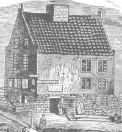

by
Stefan Bielinski
The Glen family is of Scottish origin. Many distinct branches have emigrated to North America since the 1600s. Its early Albany members are descended from Sander Leendertse [aka Alexander Lindsay] a servant and then settler at Fort Orange and Beverwyck. His son, Jacob Sanderse Glen, established the family permanently in Albany. However, the Glens became much more prominent in the Schenectady area! The family was well represented by the marriages of its daughters to the Albany mainline.
In 1697, only the home of young John Glen, Jr. was listed on the Albany census. His younger sister married Albany silversmith Jacob G. Lansing.
In 1756, three Glen-named households were listed on the Albany census. land trader John Glen, Jr. and his brother merchant Henry Glen were the most historically visible members of the Albany branch of the family during the era of the Revolution.
In 1790, two Glen-named households were listed on the Albany city census. In 1815, only one Glen-named household was listed in the city directory.
The development of family-owned property in Glenmont (located about a mile south of Cherry Hill) may have begun with the movement of merchant Cornelis Glen there following the American Revolution. The town of Glen in Montgomery County, Glenville in Schenectady, the city of Glens Falls, and many other place names recall this pioneer family today.

notes
 Sources: This sketch is derived chiefly from family and community-based resources. Internet resources include SPFS; SDHA
Sources: This sketch is derived chiefly from family and community-based resources. Internet resources include SPFS; SDHA
first posted: 5/30/05